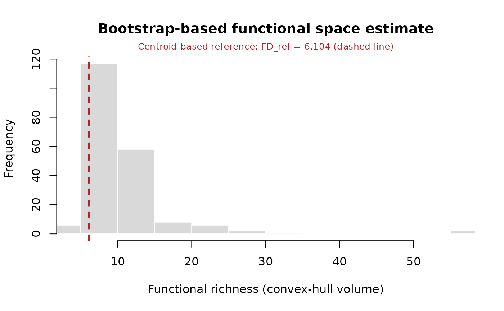

Bootstrap-based estimate of functional space volume from individual data
Source:R/bootstrap_functional_space.R
bootstrap_functional_space.RdCompares the functional richness (an n-dimensional convex-hull volume in
a PCA-based trait space) obtained when species are represented by real
individuals to the functional richness obtained when species are
collapsed to their centroid (mean trait position), following the
bootstrap procedure of Bertrand (2026, Section "Bootstrap-based
functional space estimates"). For each of n_boot bootstrap
"communities", one individual is drawn at random per species and the
convex-hull volume of these individual-level points is computed
(fd_boot); this distribution is compared to a single centroid-based
reference volume (fd_ref), obtained by replacing each species with the
mean position of its individuals before computing the hull. Because a
single randomly chosen individual necessarily sits somewhere within (or
at the edge of) its species' own dispersion, fd_boot is expected to
equal or exceed fd_ref whenever species show non-trivial intraspecific
trait variability (ITV); this function also tests whether fd_ref sits
unusually low relative to the bootstrap distribution (see Details).
Usage
bootstrap_functional_space(
x,
groups = NULL,
n_axes = NULL,
var_threshold = 0.98,
n_boot = 100,
log_transform = TRUE,
scale = TRUE
)Arguments
- x
Either an object of class
"intrait_traitspace"(fromtrait_space(), built withgroupssupplied), or adata.frame/matrix of numeric traits (one row per individual), in which casegroupsmust also be supplied and the samelog_transform/scalepreprocessing astrait_space()is applied before the PCA described below.- groups
Required when
xis a raw trait table (one value per individual, typically species identity); ignored (taken fromx$groups) whenxis an"intrait_traitspace"object.- n_axes
Integer, the number of PCA axes to retain for the convex-hull volume. If
NULL(default), the smallest number of axes whose cumulative proportion of variance reachesvar_thresholdis used automatically – Bertrand (2026) used 8 axes, capturing 98% of total variance, for a similar ten-trait morphological data set. Must leave strictly more species than axes (nlevels(groups) > n_axes), since a non-degenerate n-dimensional convex hull requires at leastn_axes + 1affinely independent points; lowern_axes(orvar_threshold) if this is not satisfied.- var_threshold
Cumulative proportion of variance used to automatically choose
n_axeswhenn_axes = NULL. Defaults to0.98, as in Bertrand (2026).- n_boot
Integer, number of bootstrap "communities". For each, one individual is drawn at random (independently across species) for every species, and the convex-hull volume of the resulting one-individual-per-species point set is computed. This is also the number of draws the significance test is based on (see Details), so larger values give a finer-grained p-value floor of
1 / (n_boot + 1). Defaults to100, as in Bertrand (2026).- log_transform, scale
As in
trait_space(); only used whenxis a raw trait table (ignored, and taken fromx, whenxis an"intrait_traitspace"object).
Value
An object of class "intrait_bootstrap_fspace", a list with
elements fd_ref (centroid-based reference volume), fd_boot
(numeric vector of length n_boot, the bootstrap volumes),
fd_boot_mean, fd_boot_sd, fd_boot_q05, fd_boot_q95 (summary of
fd_boot), diff (fd_boot_mean - fd_ref), p_value (one-sided
bootstrap p-value, see Details), n_axes (actual number of PCA axes
used), var_explained (cumulative proportion of variance captured by
those n_axes axes), n_boot, and groups. Has dedicated
print() and plot() methods.
Details
A fresh Principal Component Analysis is always performed inside this
function (on x$X, the standardised trait matrix, when x is an
"intrait_traitspace" object, or on freshly standardised x
otherwise), so that n_axes PCA dimensions – rather than only the two
axes trait_space() retains for plotting – are available for the
convex hull, exactly as in Bertrand (2026). Convex-hull volumes are
computed with geometry::convhulln() (Qhull; Barber, Dobkin &
Huhdanpaa, 1996), which requires the geometry package: it is Suggested
but not automatically installed with intraitR, since it is only needed
for this function.
Bertrand (2026) compares the bootstrap distribution to fd_ref with a
one-sided permutation test (H0: mean(FD_boot) <= FD_ref, using 9,999
permutations of an unspecified scheme). Reproducing that test exactly
is not possible from the report's description alone, so two candidate
designs were evaluated by simulation before choosing an implementation,
and it is worth recording why the first one was rejected. The initial
candidate reassigned species labels to individuals at random
(preserving sample sizes, as in trait_disparity()'s permutation test)
and compared a permuted centroid volume to a permuted single-draw
volume. Simulation showed this null is not informative here: shuffling
labels collapses every permuted centroid toward the global mean of
all individuals (a permuted "species" is just a random subsample of the
whole data set), while a permuted single-individual draw still spans
the data's full range, so the permuted difference is typically far
larger than the real, structure-preserving difference regardless of
whether genuine ITV is present – the test was essentially always
non-significant by construction, which does not match Bertrand (2026)'s
reported result and would silently mislead users.
The implementation used here instead treats fd_boot itself as the
reference (empirical, resampling-based) distribution and asks how
extreme fd_ref is relative to it, which requires no separate
permutation scheme: p_value is the proportion of fd_boot draws less
than or equal to fd_ref, plus one, divided by n_boot + 1 (the same
+ 1 correction convention as trait_disparity(); Davison & Hinkley,
1997). A small p_value means fd_ref sits in the low tail of the
bootstrap distribution, i.e. that individual-based functional richness
exceeds the centroid-based reference by more than would be expected
from the bootstrap resampling variability alone. This design was
verified by simulation (clustered points with known, tunable
intraspecific dispersion) to correctly stay non-significant when
intraspecific variability is negligible and to correctly detect a
strong, real excess when it is not.
Species represented by a single individual necessarily contribute the same point to every bootstrap draw (there is nothing to resample for that species); this is expected behaviour, not an error.
The n_boot bootstrap draws are independent of one another (each is
just one random individual per species plus a convex-hull recomputation),
so they parallelise trivially. If the future.apply package is
installed and a parallel future::plan() (e.g. future::plan( "multisession")) has been set before calling this function, the draws
are distributed across that plan's workers automatically; otherwise
(no plan set, or future.apply not installed) they simply run
sequentially, with identical results either way. This matters mainly
for large n_axes/many-species data sets, where each convex-hull
computation itself becomes more expensive (see species_sensitivity()
for a discussion of that per-call cost).
References
Bertrand P (2026). Intraspecific trait variability shapes the functional space of freshwater fish in French Guiana assemblages. M2 Biodiversity Ecology Evolution (BEE) internship report, Lille University / Centre de Recherche sur la Biodiversite et l'Environnement (CRBE, AQUAECO team), unpublished, supervised by A. Toussaint and S. Brosse.
Villeger S, Mason NWH, Mouillot D (2008). New multidimensional functional diversity indices for a multifaceted framework in functional ecology. Ecology, 89(8), 2290-2301.
Barber CB, Dobkin DP, Huhdanpaa H (1996). The Quickhull algorithm for convex hulls. ACM Transactions on Mathematical Software, 22(4), 469-483.
Davison AC, Hinkley DV (1997). Bootstrap Methods and their Application. Cambridge University Press.
Examples
# \donttest{
if (requireNamespace("geometry", quietly = TRUE)) {
fish <- load_t26_saudrune_landmarks()
segments <- fishmorph_segments(fish)
ratios <- fishmorph_ratios(segments)
ts <- trait_space(ratios, groups = fish$metadata$species, na_action = "omit")
# n_axes = 2 here only to keep the example fast; Bertrand (2026) used 8
bf <- bootstrap_functional_space(ts, n_axes = 2, n_boot = 200)
bf
plot(bf)
}
#> Warning: 3 specimen(s) have a zero-length or missing scale bar (points 20-21); their segments will be NA.
#> Warning: Dropping non-numeric column(s) from the ordination: specimen, individual, species, population, operator
#> na_action = "omit": removing 230 row(s) out of 558 with missing values.
#> flag_outliers: 21 specimen(s) flagged as within-group outlier(s) across 5 group(s) (Barbatula barbatula, Gobio occitaniae, Leuciscus burdigalensis, Phoxinus phoxinus/bigerri, Squalius cephalus); this only flags candidates for review (e.g. with plot_landmarks()/plot_fishmorph_points()), nothing was removed automatically. Set remove_outliers = TRUE to exclude them from the ordination, or see $outlier_screen for details.
#> flag_outliers: 2 group(s) have fewer than outlier_min_n = 5 specimens and were not screened (distance still reported, flagged = NA).

# }